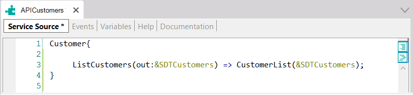
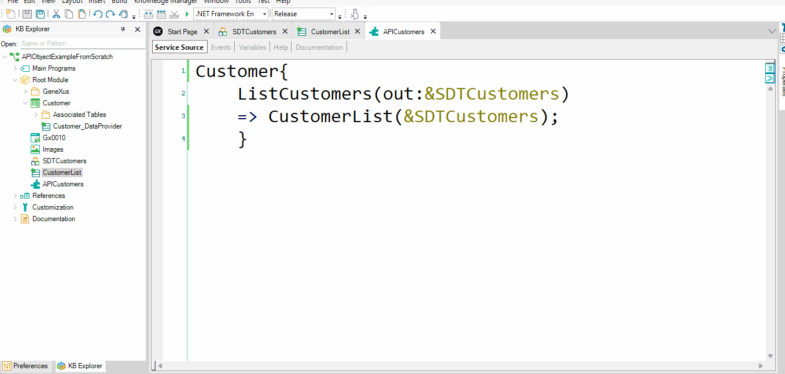

This article describes all the necessary steps to declare, inside an API object called APICustomers, a GetByKey service that returns all the information of a certain customer.
Consider a Knowledge Base containing:
1) A Customer Transaction object:
Customer
{
CustomerId*
CustomerName
CustomerLastName
}
Note: The Customer Transaction has Automatic data population.
2) An API object called APICustomers. In its Service Source tab, it already contains a declared service that maps an external name exposed as a service (ListCustomers) with the internal implementation in the KB (the CustomerList Data Provider):

Now, suppose you need to define another service (method) named GetByKey, as part of the APICustomers object, to bring the information of a particular Customer received as a parameter (the customer identifier).
To do so, first set the Customer Transaction as a Business Component.
After that, create a new Procedure object and name it CustomerGetByKey.
In the Procedure Rules section, define a Parm rule as follows:
Parm(in:&CustomerId, out:&Customer);
In the Procedure Source, define the following code:
&Customer.Load(&CustomerId)
If &Customer.Fail()
&Customer.CustomerId=0
&Customer.CustomerName= "Invalid data"
EndIf
Next, go to the APICustomers API object, and inside its Service Source declare the new method (GetByKey) under the ListCustomers method:
Customer{
...
GetByKey(in:&CustomerId, out:&Customer, out:&Messages)=> CustomerGetByKey(&CustomerId, &Customer);
}
The GetByKey method uses input and output parameters represented by variables, so these variables must also be defined in the API object Variables section.
Note that in the service declaration, the &Messages variable is an out parameter and it is not mentioned in the implementation. This is supported. This kind of variable can be assigned in the AFTER event of the service.
The next step is to define the Events in the Events section of the APICustomers API object.
For each defined method, such as GetByKey, you can define their respective Events: Before and After.
Event GetByKey.Before
If &CustomerId < 0
&RestCode=412
return
endif
EndEvent
Event GetByKey.After
If &Customer.CustomerId= 0
&Message.Type= MessageTypes.Error
&Message.Description= format("There was an error loading Customer Information &1.",&CustomerId)
&Messages.Add(&Message)
&RestCode= 404
EndIf
EndEvent
Remember that &RestCode is a predefined variable that you need to set to customize the returned HTTP Status Code.
The order of events executed when calling the GetByKey method is as follows:
Below you can see all the steps being executed:

| Backlinks | |
| Calling rest API Using Postman app | Toc:First Steps with API Objects |